Siege Token
 Siege Tokens (Item ID: 29718) are a form of currency, awarded from Guild versus Guild (GVG) and structured Player versus Player (sPVP) events.
Siege Tokens (Item ID: 29718) are a form of currency, awarded from Guild versus Guild (GVG) and structured Player versus Player (sPVP) events.

Acquisition
A player can earn a maximum of 3000 Siege Tokens per week. The cap is reset every Saturday 00:00 server time (PST or PDT when applicable).
You can check your weekly limits by utilizing the @siegecap / @siegetoken / @sgc comands.
- War of Emperium (WoE)
- Earning the participation reward requires attending the majority of the War of Emperium.
- A player can only earn participation and winner rewards from one single WoE.
- War of Emperium 1: event provides 1,250 Siege Tokens for the winning guild and 1,000 Siege Tokens for the other participating guilds.
- Members of the castle owning guild will receive a bonus of 25 Siege Tokens per minute held.
- Members of other participating guilds will receive a bonus of 15 Siege Tokens per minute held.
- Players can earn a maximum of 1,750 Siege Tokens from WoE1.
- Active members of the castle owning guild also receive a Highlander's Bounty when receiving dailies for the week, which contains on average an additional ~65 Siege Tokens. Siege Tokens from the Highlander's Bounty do not count towards the weekly cap.
- Draft War of Emperium: event provides 500 Siege Tokens for participating.
- Battlegrounds (BG)
- Only players who earned participation rewards from the previous week's WoE 1 or Draft WoE events can earn Siege Tokens from Battlegrounds.
- Players must attend at least one War of Emperium at the start of the week to earn Siege Tokens from Battlegrounds during that week.
- The amount of Siege Tokens earned is dependent on the game mode. Generally speaking, the winning team receives 10 to 25 Siege Tokens and the losing team receives 3 to 10 Siege Tokens for each round.
- You can earn up to 2,000 Siege Tokens from Battlegrounds per week. Siege Tokens earned from Battlegrounds will count against the overall weekly total.
- Only players who earned participation rewards from the previous week's WoE 1 or Draft WoE events can earn Siege Tokens from Battlegrounds.
Uses
Siege Merchant

The Siege Merchant is located close to @go woe, just to the west of the spawn point. The exact co-ordinates are /navi prontera 141/279.
The following items cannot be traded:
- Warlord's Treasure
- Large Bapho Horns
- Spiritual Tunic
- RWC Ring
- RWC Pendant
All other items have no trade restrictions.
The list of some of the wares is as follows:
| Siege Merchant Shop | |||
|---|---|---|---|
| Image | Name | Price | Description |
| 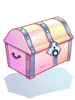 | Warlord's Treasure | 100 Siege Tokens | A piece of treasure to fuel your war efforts. Obtain one of the following consumables or Costume headgears:
Costumes Set I
Costumes Set II
*Note: All the Costume headgears are account-bound. |
| 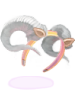 | Large Bapho Horns Box | 1000 Siege Tokens | A box containing 1  Large Baphomet Horns. Rental period: 5 days. Large Baphomet Horns. Rental period: 5 days.
Once this item is purchased, termination of contract is impossible. This item not refundable or tradeable. A headgear made from the horns of Baphomet. Reduces damage from Demi-Human monsters by 12%. Increases ATK based on job level. |
| 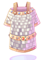 | Spiritual Tunic Box | 500 Siege Tokens | A box containing 1 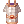 Spiritual Tunic. Rental period: 5 days.
Once this item is purchased, termination of contract is impossible. This item not refundable or tradeable. A tunic imbued with spiritual power. MaxHP +800. Cannot be frozen. Increases resistance to all elements except Water and Neutral by 20%. MDEF +5. |
| 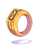 | RWC Ring | 2500 Siege Tokens | A ring made of pure gold imbued with mystical powers to commemorate RWC.
ATK +1%. [+ RWC Pendant] ATK +4% & MATK +4% |
| 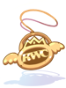 | RWC Pendant | 2500 Siege Tokens | A pendant made of pure gold imbued with mystical powers to commemorate RWC.
MATK +1%. [+ RWC Ring] ATK +4% & MATK +4% |
 |
Warlord's Mail [1] | 4500 Siege Tokens | A magical robe worn by the king of the Laphine tribe.
Does not work outside of War of Emperium, PVP or BG. ATK +10, MATK +10. MDEF +5, Reduces damage from Demi-Humans by 1%. If refined to +7 or higher: Reduces damage from Demi-Humans by an additional 2%. If refined to +8 or higher: Reduces damage from Demi-Humans by an additional 2%. If refined to +9 or higher: Reduces damage from Demi-Humans by an additional 2%. Immune to Frozen status. |
 |
Warlord's Bravery | 400 Siege Tokens | A powder designed to coat Warlord's Mail with powerful energy.
(Used to enchant Warlord's Mail [1]) |
| 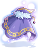 | Warlord's Manteau [1] | 9000 Siege Tokens | Effects only take place in pvp/bg/woe.
A cape made long ago. It still looks brand new. Reduces damage from Demi-Humans by 4%. When combined with any Temporal Boots: Max HP + 15%, Max SP +5%; Reduces damage from Demi-Humans by 6% |
| 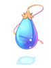 | Warlord's Valor | 400 Siege Tokens | A liquid designed to make Warlord's Manteau be imbued with a powerful energy.
(Used to enchant Warlord's Manteau [1]) |
| 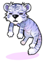 | White Drooping Eddga | 6500 Siege Tokens | A hat that is shaped like a white tiger
STR + 2, DEX + 2. Increases damage against [Brute] race monsters by 10%. When attacking, there is a chance that for 3 seconds your character will turn into 'Eddga, King of Tigers' and will gain additional attack power. Frequency and attack power of the transformation are based on the refinement of the headgear. |
 |
Zaha Doll Hat [1] | 6500 Siege Tokens | A doll resemble to fairly 'Bacsojin'
INT +3, MDEF +9. Increase Magic Damage to Undead by 10%. When using or receiving magic attacks, you have a chance of transforming into the fairy "Bacsojin". While transformed, you drain SP by 10 per second and you gain increased magical damage. The refine rate increases the duration and the damage increase of the transformation. |
| 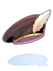 | Black Feather Beret [1] | 6000 Siege Tokens | A noble High quality hat made of luxury black cloth. A feather makes it more gorgeous.
Reduce damage from demi-human type monsters by 10%. VIT +2, MDEF +3. |
| 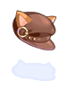 | Cat Ear Beret [1] | 3500 Siege Tokens | A cute beret with cat ears! Cats don't normally wear hats but if they did they would wear this one.
ATK +5%. For each refine +6 or higher, increases 1% physical damage inflicted and reduces 1% damage received from demi-human monsters. |
| 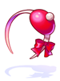 | Red Pom Band [1] | 3500 Siege Tokens | A lovely red hat with a white pom pom.
MDEF +5, MATK +5%. For each refine +6 or higher, increases 1% magical damage inflicted and reduces 1% damage received from demi-human monsters. |
| 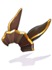 | Piamette's Brown Ears [1] | 10000 Siege Tokens | Piamette's brown ears cap. It's a favorite among children.
MaxHP +10%. Reduce damage from Demihuman monsters by 5%. For every refine level, MATK +2. |
| 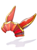 | Piamette's Red Ears [1] | 3500 Siege Tokens | Piamette's red ears cap. It's a favorite among children.
STR +5. MaxHP +5%. Reduce damage from fire-type monsters by 10%. Refined to 9, ASPD +1. For every 2 refinements above 9, ASPD +1. |
| 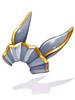 | Piamette's Blue Ears [1] | 3500 Siege Tokens | Piamette's blue ears cap. It's a favorite among children.
Reduce damage from Demihuman monsters by 5%. Increases damage to medium-type monsters by 10%. Refined to 12 above, reflects physical damages by 5%. |
| Thanatos's Odium Mask [1] | 9000 Siege Tokens | A mask worn by Thanatos Odium. It has a cute, yet strong design.
Reduces damage received from Players by 5%. Max HP + 5%. | |
| 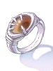 | Warlord's Ring [1] | 10000 Siege Tokens | Does not work outside of War of Emperium or BG
This magic ring contains ancient power that used to belong to another ring. Reduce damage received from Neutral and Ghost property attacks by 6%. |
| 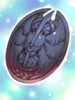 | Warlord's Shadow Shield | 2000 Siege Tokens | A small shield worn on the arm for additional defense during Siege warfare.
Reduces damage taken from enemy players by 1%. Refine Level +7: Reduces damage taken from enemy players by an additional 1%.
If worn with Warlord's Shadow Mail: Reduces damage taken from enemy players by an additional 2% and Max HP +5%. |
| 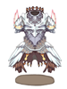 | Warlord's Shadow Mail | 2000 Siege Tokens | A suit of armor worn on top of normal armor for additional defense during Siege warfare.
Reduces damage taken from Medium size enemies by 2%. Refine Level +7: Reduces damage taken from Medium size enemies by an additional 1%.
|
 |
Warlord's Shadow Orb | 750 Siege Tokens | A small Shadow Orb obtained from Siege warfare.
(Used to refine Warlord's Shadow Shields and Warlord's Shadow Mails.) |
| 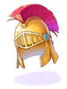 | 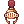 Legionaire Helm | 4500 Siege Tokens | A helm used in an ancient western country, famous for close formations and tight defense. |
| 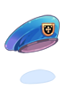 | 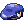 Costume Navy Blue Beret | 4500 Siege Tokens | A navy blue beret worn by the elite soldiers of the Navy of Alberta. It is very effective when battling pirates on the high seas. |
| 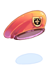 | 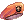 Costume Red Beret | 4500 Siege Tokens | A military cap symbolic of the fighting spirit of many armies. |
| 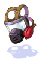 |  Alchemist Mask Alchemist Mask
|
4500 Siege Tokens | A protective mask that was used by Alchemists to protect from poisonous gas. |
| King Frog Hat | 4500 Siege Tokens | Looks like an ugly frog but actually it's a handsome prince whose waiting for a lady who can unleash the magic. | |
| 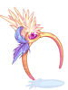 | 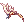 Valkyrie Headband | 4500 Siege Tokens | A simple band carrying a golden ornament of Valkyrian origin. Feel the feathers sway in the wind and their power flow through you. |
| 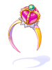 | 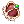 Mini Crown | 4500 Siege Tokens | A mini red crown affixed to a headband and worn off to the side.
Though not a true symbol of royalty, this crown does have a regal air about it. |


General Sotaro
General Sotaro is located close to @go woe, just to the west of the spawn point. The exact co-ordinates are @navi prontera 143/281. You can create two special headgears that will help in PVP.
| General Sotaro Headgears | |||
|---|---|---|---|
| Image | Name | Ingredients | Description |
 |
 Handkerchief In Mouth Handkerchief In Mouth
|
3000 |
Nibbling on this handkerchief makes people feel compassion for you.
3% reduced damage from human type monsters.
Defense: 1 Location: Lower Weight: 10 Required Level: 12 Jobs: All Class |
 |
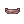 Challenger's Blindfold |
6000 |
You don't need sight to defeat your enemies. Show off your prowess with this tough-looking blindfold.
Reduce damage from Demi-humans by 5%
Defense: 1 Location: Mid Weight: 10 Required Level: 70 Jobs: All Class |
| 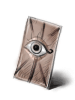 |  Prismatic Protection Card Prismatic Protection Card
|
3500 7500 |
Increase resistance to Water, Wind, Earth, Fire, Holy, and Shadow properties by 10%.
On a 2% chance when receiving magical damage, increases resistance to Water, Wind, Earth, Fire, Holy, and Shadow properties by 10% for 10 seconds. Does not work outside of War of Emperium, PVP or BG
Location: Accessory Weight: 1 Jobs: All Class |


RWC Artificer
The RWC Artificer is located close to @go woe, just to the south-east of the spawn point. The exact co-ordinates are /navi prontera 162/267. You can use this NPC to add a card slot and/or enchant your  RWC Rings and
RWC Rings and  RWC Pendants which were purchased from the Siege Merchant.
RWC Pendants which were purchased from the Siege Merchant.
Slotting
Adding a card slot to an RWC accessory costs 4000 Siege Tokens. This process has no chance of failure. A socket can be added on any RWC accessory that has up to 3 enchants. If the RWC accessory has 4 enchants, slotting will no longer be possible.
An RWC Ring will become a 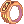 Chambered RWC Ring [1].
An RWC Pendant will become a Chambered RWC Pendant [1].
Enchantment
The initial set of enchantments costs 1000 Siege Tokens each. You can enchant a standard RWC accessory up to 4 times and a chambered RWC accessory up to 3 times.
The first two enchantments cannot fail. The enchantments possible are as follows:
| Ring | Pendant |
|---|---|
 Fighting Spirit 1 Fighting Spirit 1
|
 Spell 1 Spell 1
|
 Fighting Spirit 2 Fighting Spirit 2
|
 Spell 2 Spell 2
|
 Fighting Spirit 3 Fighting Spirit 3
|
 Spell 3 Spell 3
|
 ATK +1% ATK +1%
|
 MATK +1% MATK +1%
|
| 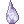 ATK +2% |  MATK +2% MATK +2%
|
 ATK +3% ATK +3%
|
 MATK +3% MATK +3%
|
 HP +100 HP +100
| |
 HP +200 HP +200
| |
 HP +300 HP +300
|
The final two enchants have a 25% chance of failure. Upon failure, all existing enchantments are erased. You can optionally pay 4000 Siege Tokens to enchant with no chance of failure. The enchantments possible are as follows:
| Ring | Pendant |
|---|---|
| STR +1~3 | |
| AGI +1~3 | |
| VIT +1~3 | |
| INT +1~3 | |
| DEX +1~3 | |
| LUK +1~3 | |
| HP +100
| |
| HP +200
| |
| HP +300
| |
A fully enchanted RWC accessory can have one enchant re-rolled at a time. Each re-roll attempt costs 1750 Siege Tokens and 550 Valor Badges.